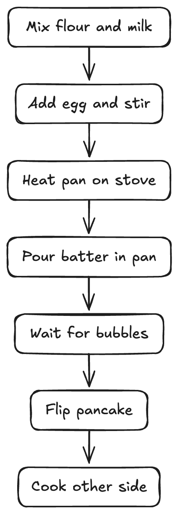
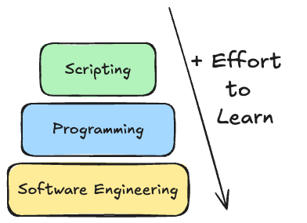
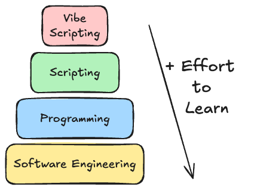
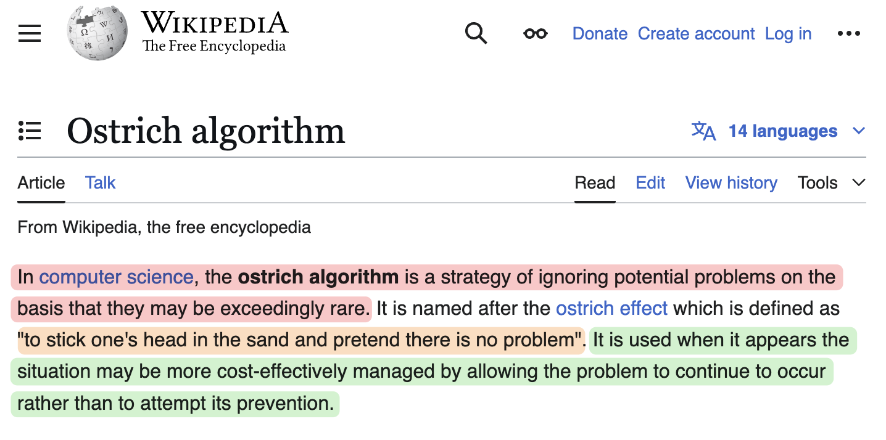
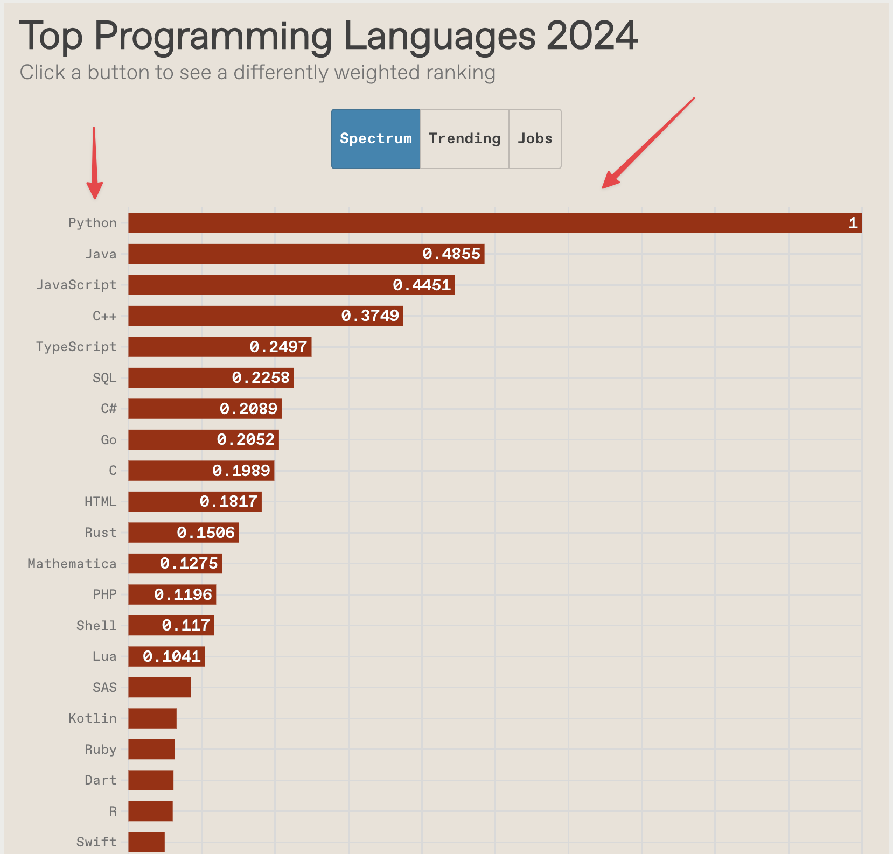
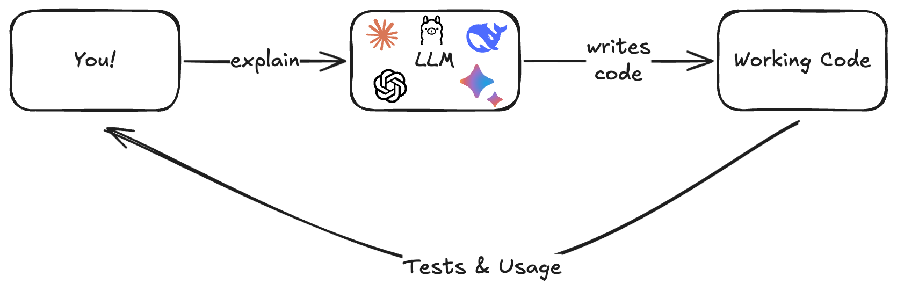
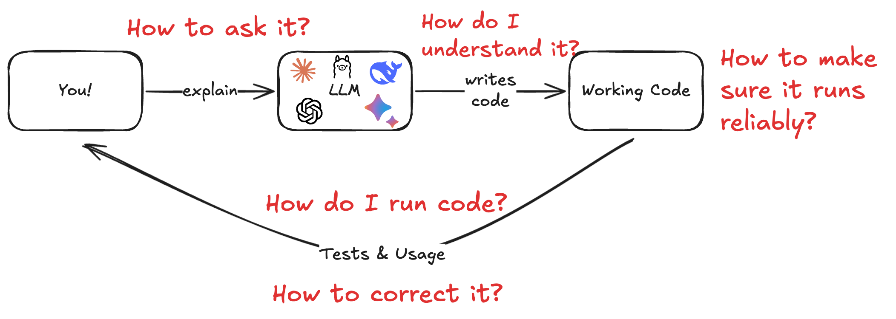

class: center, middle # Using AI Tools and Python to Automate Tasks _A two-day, beginner-friendly journey to streamline workflows, boost productivity, and integrate AI into everyday tasks._ --- # Goals 1. **Understand the basics of Python scripting without prior programming experience** -- 2. **Explore ways to leverage LLMs in combination with Python** -- 3. **Learn how to automate tasks such as file organization and data entry** -- 4. **Use Python scripts to integrate with external LLM APIs** --- class: center, middle <h1> <span style="background-color: orange"> Survey Question: Do you have a subscription for ChatGPT/Claude/Gemini? </span> </h1> --- class: center, middle # Why Learn to Automate? --- # Automation as a General Skill - **Automate Repetitive Tasks** -- - **Increase Productivity** -- - **Save Money**: - Replace expensive subscription tools with your own scripts -- - **Analyse Massive Amounts of Data** --- class: center, middle # The Real Reason.... --- class: center, middle # Writing code = the most general skill you can have! *It is a superpower! :)* --- class: center, middle # Scripting vs. Programming *An important distinction!* --- # Both are About Following Recipes <div style="text-align: center;">  </div> --- # Scripting - Writing code to full fill a set of pre-defined steps that accomplish a task -- - Quick, targeted, and task-oriented -- - Typically used for automations, data manipulation, or utility tasks -- - Toy example -> Renaming multiple files ```python # Rename all .txt files in a directory to include today's date import os from datetime import date today = date.today().strftime("%Y-%m-%d") for filename in os.listdir("."): if filename.endswith(".txt"): new_name = f"{today}_{filename}" os.rename(filename, new_name) ``` --- # Vibe Scripting? <div style="display: flex; align-items: center;"> <div style="flex: 1;">  </div> <div style="flex: 1;"> <p style="margin-top: 20px; margin-left: 0;"> <img src="" width="105%"> </p> </div> </div> --- # Vibe Scripting? <div style="display: flex; align-items: center;"> <div style="flex: 1;"> </div> <div style="flex: 1;"> <p style="margin-top: 20px; margin-left: 0;">  </p> </div> </div> --- # Why focus on scripting/vibe scripting? -- - Much faster learning curve - *if it works don't change it* -- - Immediate practical benefits - *makes your life better* -- - Ideal for nondevelopers who just want to get things done -- - I call it "The Ostrich Approach to Learning Python" <div style="text-align: center;"> </div> --- class: center, middle <div style="text-align: center;">  </div> --- class: center, middle # It's about Learning What We Need for Our Tasks! -- *And purposefuly ignoring that which does not seem to have any effect on its success.* --- class: center, middle <div style="display: flex; align-items: center; justify-content: center;"> <h1 style="margin-right: 20px;">Why Python?</h1> <img src="../notebooks/assets/python-logo.svg" width="100px"> </div> --- <div style="display: flex; align-items: left; "> <h1 style="margin-right: 20px;">Python is Easy and Everywhere</h1> <img src="../notebooks/assets/python-logo.svg" width="100px"> </div> <div style="text-align: center;">  </div> --- <div style="display: flex; align-items: left; "> <h1 style="margin-right: 20px;">Python is Easy and Everywhere</h1> <img src="../notebooks/assets/python-logo.svg" width="100px"> </div> - Python is a general purpose language (can be used for everything) -- - Python is used across the board in AI from developing AI models to powering self-driving cars -- - Python is super easy to learn due to its proximity with natural language --- class: center, middle # The Busy Person Guide to Python Basics --- # Python Things We Will Learn - **Basic Syntax**: Indentation, variable assignments, printing -- - **Common Data Types**: Strings, integers, floats, booleans -- - **Control Structures**: `if` statements, loops (`for`, `while`) -- - **Useful Libraries**: `os` for file operations, `csv` for handling CSVs, `requests` for making web requests -- - That is a lot! How can we manage? -- - Use AI conversationally! Asking questions and clarifying what you don't know! --- # The "Just Ask AI" Naive Approach -- <div style="display: flex; justify-content: center; align-items: center; margin-top: 150px;">  </div> --- # The "Just Ask AI" Naive Approach <div style="display: flex; justify-content: center; align-items: center; margin-top: 120px;margin-left: 50px;">  </div> --- class: center, middle <h1> <span style="background-color: lightgreen;"> Demo - Setting Up Your Environment </span> </h1> (Installing Python, uv, Editor, Jupyter Notebook, AI chatbot) <div style="display: flex; justify-content: center; align-items: center; margin-top: 20px;"> </div> --- # Data Types, Operations, Variables - Writing code is about writing text that changes or manipulates data in some way -- - <div style="display: flex; align-items: center;"> <div> For that we need? ..... (drumbroll)</div> <div></div> </div> - **Data!** Specifically a way to describe it, reference it, talk about it etc... -- - In Python data can be of different **types** (like numbers, text, image etc...) -- - The things we can do to it are called **operations** (like 5+5) -- - To organize things, we use **variables** to define what each thing is --- # Data Types, Operations, Variables - Example - Here is a piece of code that defines a variable of some type and performs a simple operation on the data stored in the variable ```python # This is data of type string! name = "Lucas" # This is data of type integer! actual_age = 33 # This is data of type integer! mental_age = 12 # our operation average_age_between_actual_and_mental = (actual_age + mental_age) / 2 # special function that displays what goes inside of it print(average_age_between_actual_and_mental) # this would be a float! # Output: 22.5 ``` --- class: center, middle <h1> <span style="background-color: lightgreen"> Data Types; Operations; Variables - Demo </span> </h1> --- # Data Types, Operations, Variables - **Core Data Types**: -- - **int**: whole nubmers like 1, 2, 3 ... -- - **float**: decimal numbers like 1.1, 1.0, etc... -- - **string**: text like `'Hello'` -- - **bool**: logical booleans like True or False -- - **Operations**: -- - **Arithmetic** `(`+`, `-`, `*`, `/`, `**`, `//`, `%`)` -- - **String concatenation** (`'Lucas' + ' is' + ' wonderful' = 'Lucas is wonderful'`) -- - **Logical operations** (`and`, `or`, `not`) -- - **Comparison operations** (`>`, `<`, `>=`, `<=`, `==`, `!=`) --- - **Variables**: Storing data for reuse, assigning and reassigning values: ```python a = 10 b = 20 print(a + b) # Output: 30 ``` --- class: center, middle <h1> <span style="background-color: lightgreen"> Demo: Functions, Lists & Loops </span> </h1> --- # Functions -- - Functions are a way to group code that performs a specific task -- - Functions can take parameters and return values -- - For example, a function that calculates the total cost of an item including tax -- - We could do this by simply writing a script: -- ```python # Arithmetic operation: multiplication of parameters tax = price * tax_rate # Arithmetic operation: addition of variables total = price + tax ``` - But what if I want to re-use this code for different prices and tax rates? --- # Functions - Here is what it would look like if we define a function to do this: ```python def calculate_total(price, tax_rate): tax = price * tax_rate total = price + tax return total ``` -- - Now we can re-use the function for different prices and tax rates: ```python shirt_price = 10 shirt_tax_rate = 0.05 pants_price = 20 pants_tax_rate = 0.1 print(calculate_total(shirt_price, shirt_tax_rate)) # Output: 10.5 print(calculate_total(pants_price, pants_tax_rate)) # Output: 22.0 ``` --- # Functions - **Why Functions?**: Reuse code and break tasks into smaller chunks -- - **Defining a Function**: `def function_name(parameters):` -- - **Return Values**: Make your functions flexible and reusable -- - **Best Practices**: Keep them short, descriptive, and single-purpose --- # Lists & Loops - **Lists**: Python’s go-to data structure for ordered collections -- ```python # Define a list of tasks tasks = ["Buy groceries", "Finish project", "Call the bank"] ``` - **Access Elements**: Indexing and slicing -- ```python print(tasks[0]) # Output: Buy groceries print(tasks[1]) # Output: Finish project ``` -- - **Slice**: Get a range of elements -- ```python print(tasks[0:2]) # Output: ['Buy groceries', 'Finish project'] ``` --- # Lists & Loops - **Loops**: `for` loops to iterate over items -- ```python tasks = ["Buy groceries", "Finish project", "Call the bank"] for task in tasks: print(task) ``` -- - **Processing List Elements**: With `for` loops we can perform the same operation on each element of the list -- ```python # Below we use an imaginary function that asks a robot to do a task for task in tasks: ask_robot_to_do(task) ``` -- **Common Uses**: Batch renaming files in a directory, processing data from tables, etc... --- class: center, middle <h1> <span style="background-color: lightgreen"> Demo - Dictionaries, Tabular Data, Conditionals </span> </h1> --- # Dictionaries & Tabular Data - **Dictionaries**: Key-value pairs for storing related data -- ```python # Dictionary of product prices prices = { "apple": 0.50, "banana": 0.75, "orange": 0.60 } ``` -- - **Accessing Values**: Use keys to lookup values quickly -- ```python print(prices["apple"]) # Output: 0.50 print(prices["banana"]) # Output: 0.75 ``` -- - **Common Uses**: Storing configurations, mapping relationships, caching data --- # Comparators & Conditionals - **Boolean Comparisons**: `==`, `!=`, `>`, `<`, `>=`, `<=` -- ```python # Example of a boolean comparison a = 10 b = 20 print(a == b) # Output: False print(a != b) # Output: True print(a > b) # Output: False print(a < b) # Output: True print(a >= b) # Output: False print(a <= b) # Output: True ``` -- - **Logical Operators**: `and`, `or`, `not` -- ```python # Example of a logical operator print(True and False) # Output: False print(True or False) # Output: True print(not True) # Output: False ``` --- # Comparators & Conditionals - **Conditionals**: Using conditionals `if/elif/else` to perform different actions based on data -- ```python # Example of an if statement if a > b: print("a is greater than b") ``` -- ```python # Example of an if/else statement if a > b: print("a is greater than b") else: print("a is less than or equal to b") ``` -- ```python # Example of an if/elif/else statement if a > b: print("a is greater than b") elif a == b: print("a is equal to b") else: print("a is less than b") ``` --- class: center, middle <h1> <span style="background-color: lightgreen"> Demo - Working with Data, APIs & Packages </span> </h1> --- # Reading/Writing - **Tabular Data**: Data that is organized in a table format -- - **Common Formats**: `.csv`, `.json`, `.xlsx`, `.xls` -- - CSV Files store data in rows and columns via comma-separated values: ```text Name,Age,City John Smith,32,New York Jane Doe,28,San Francisco ``` <table style="border-collapse: collapse; width: 80%; margin: 20px auto;"> <tr style="background-color: #f2f2f2;"> <th style="border: 1px solid #ddd; padding: 8px; text-align: left;">Name</th> <th style="border: 1px solid #ddd; padding: 8px; text-align: left;">Age</th> <th style="border: 1px solid #ddd; padding: 8px; text-align: left;">City</th> </tr> <tr> <td style="border: 1px solid #ddd; padding: 8px;">John Smith</td> <td style="border: 1px solid #ddd; padding: 8px;">32</td> <td style="border: 1px solid #ddd; padding: 8px;">New York</td> </tr> <tr style="background-color: #f2f2f2;"> <td style="border: 1px solid #ddd; padding: 8px;">Jane Doe</td> <td style="border: 1px solid #ddd; padding: 8px;">28</td> <td style="border: 1px solid #ddd; padding: 8px;">San Francisco</td> </tr> </table> --- # APIs, Packages, and AI as an API - **APIs 101**: Application Programming Interface—send a request, get a response -- - **Python Packages**: Example: `requests` library to make HTTP calls -- - **AI as an API**: Connect to services like OpenAI or Claude for text generation, content analysis, and more --- class: center, middle <h1> <span style="background-color: lightgreen;"> Demo - Vibe Scripting with UV + AI </span> </h1> --- class: center, middle # How to Use AI to Learn/Use Python *A quick detour to set up an AI toolkit to speed up our Automation skills * --- # A.R.U.F.S Framework -- ## **A**sk,**R**un,**U**nderstand,**F**ix,Be **S**afe -- - **A**sk → how to ask effectively, give the right context -- - **R**un → how to run the code AI gives you -- - **U**nderstand → how to understand it/learn from it -- - **F**ix → how to fix it -- - Be **S**afe → pittfalls & security risks --- # Ask - Be detailed - Use context (docs, articles, pdfs, ...) - <span style="color: red">????</span> --- # Run - Ask for terminal command that runs your script --- # Understand - Ask for comments on the code --- # Fix - Feed the output of the terminal to the AI and ask to fix it --- # Be Safe - Explicit state to the LLM to avoid hard coding API keys, and consider pitfalls and security risks --- # Automating Data Extraction - **Target Websites or Documents**: Identify patterns or structures (tables, IDs, HTML tags) -- - **Techniques**: Using Beautiful Soup, Pandas, or request-response cycles -- - **Practical Examples**: Extracting data from a CSV, scraping a simple webpage for product listings --- # Automating Basic Data Analysis - **Data Loading**: Reading CSV files, Excel sheets, or database tables with Pandas -- - **Basic Analysis**: Calculating averages, sums, or finding patterns in data -- - **Visualization**: Creating simple charts or graphs to represent findings --- # Automating Slides - Effective data wrangling for high quality slides -- - A Hybrid Approach: AI + Python Scripts -- - Bulk Processing to save time --- # Automating the Browser - **Tools**: `selenium`, `playwright` -- - **Common Tasks**: Logging in to websites, navigating pages, clicking buttons, scraping dynamic elements -- - **Why Automate Browser Tasks?**: Speed up online research, data entry, or repetitive website interactions --- # Automating Filling Out Forms - **Form Fields**: Identifying input boxes, radio buttons, checkboxes in HTML -- - **Scripts**: Using `selenium` to locate elements by ID/class/xpath and input data -- - **Real-World Use**: Automating repetitive website sign-up processes, survey completion, or internal data-entry forms --- class: center, middle <h1> <span style="background-color: lightgreen"> Demo - Prompts, Tips & Tricks </span> </h1> --- class: center, middle # Using AI != Slop --- # Using AI != Slop *Slop is using unreviewed output (like code) from AI models* <div style="text-align: center;"> </div> --- # Using AI != Slop 1. Working with AI involves having a system for effectively reviewing high quality outputs -- 2. Means having good systems for generating good outputs on the first place -- 3. Then learning to put in place a procedure for effective review and feedback on top of the outputs you get ---